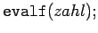
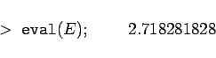
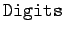
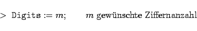

Inhalt Index DeskTop Bronstein

 Computeralgebrasysteme Maple Zahlenarten in Maple Darstellung und Konvertierung von Zahlen
Computeralgebrasysteme Maple Zahlenarten in Maple Darstellung und Konvertierung von Zahlen


Der Befehl  wandelt rationale Zahlen oder zunächst symbolisch dargestellte Zahlen und Ergebnisse von Berechnungen in Gleitpunktzahlen mit der voreingestellten Präzision um, d.h. in der Regel 10 Stellen.
| Beispiel |
|

|
Die Präzision wird in Maple durch die Umgebungsvariable  gesteuert. Ist die Voreinstellung für die konkrete Aufgabe nicht geeignet, so läßt sich mit
|  | (20.36) |
eine Änderung herbeiführen. Diese gilt bis zur nächsten Neufestlegung.